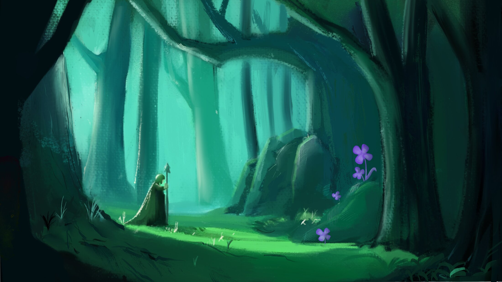
Portfolio
Concept Art · Visual Development · Characters · Props · Environments
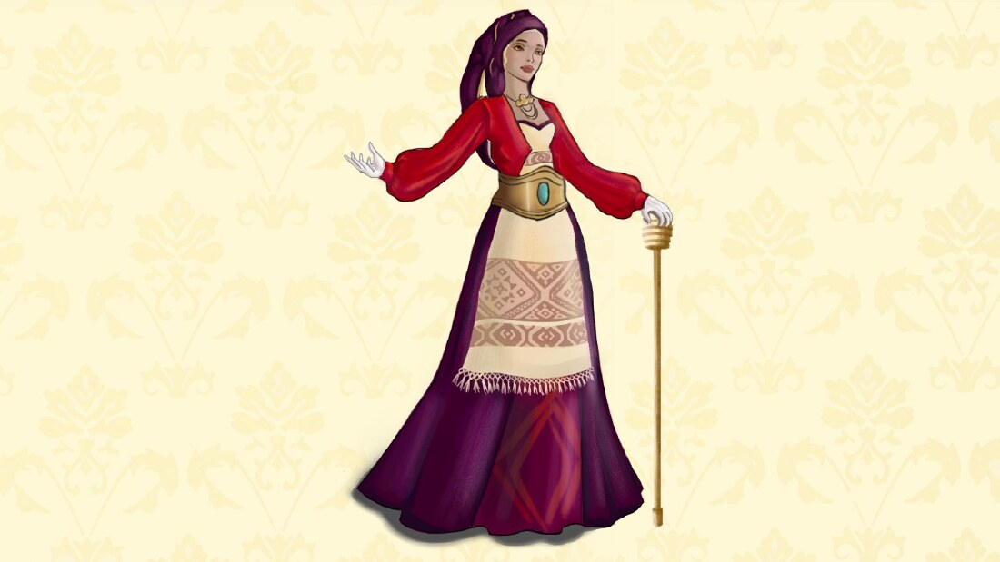
Characters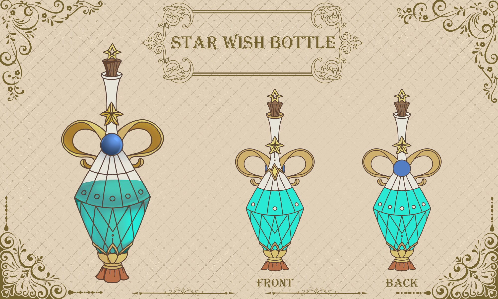
Prop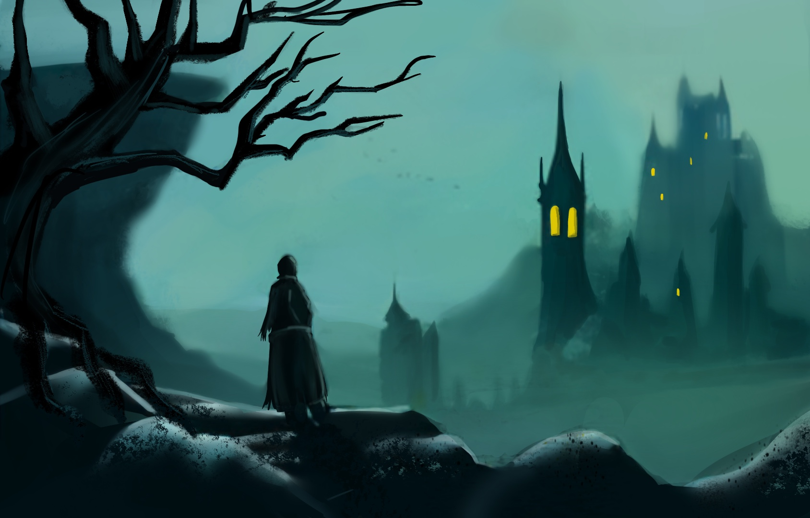
Environments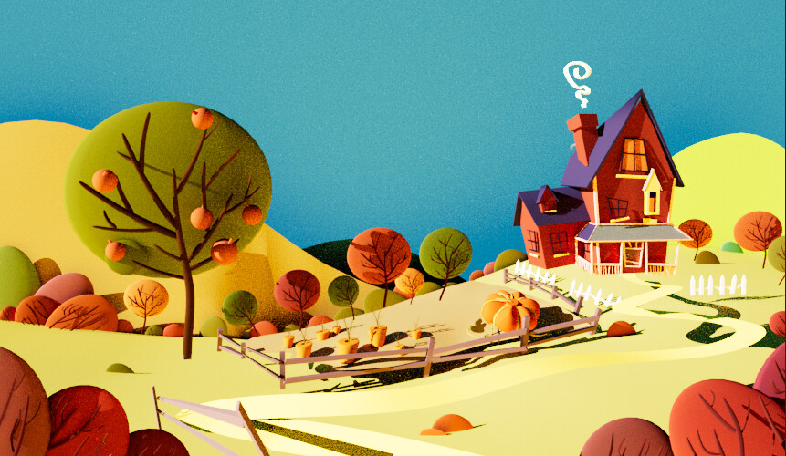
3D &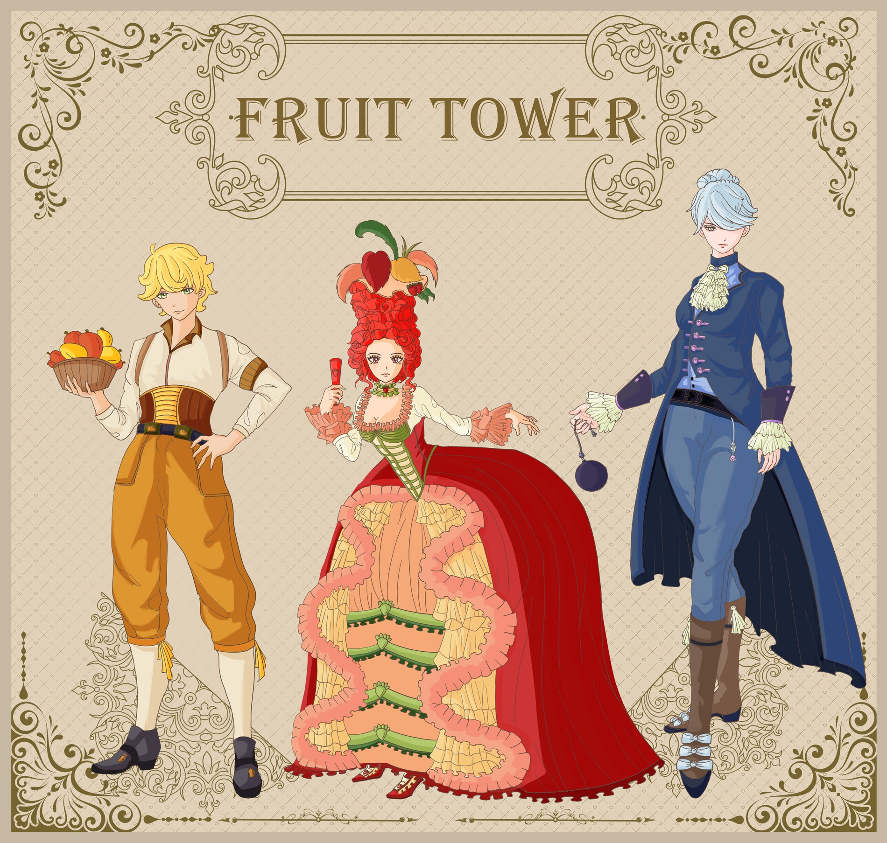
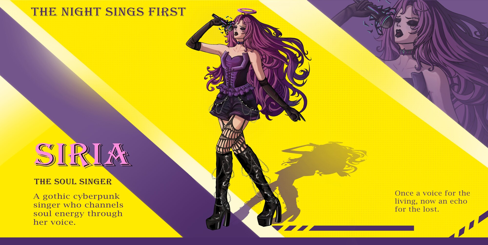
Featured process — costume design
A full costume-design pass for Honey, a dessert fairy from the Cake Dessert Kingdom, reimagined through traditional Cypriot dress. From cultural research to a production-ready turnaround, this project documents the reasoning behind every garment choice.
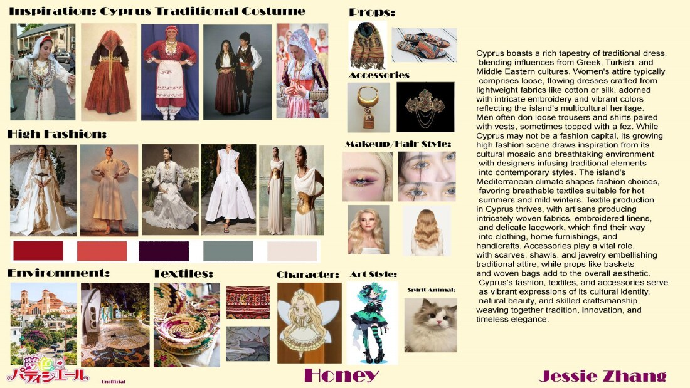
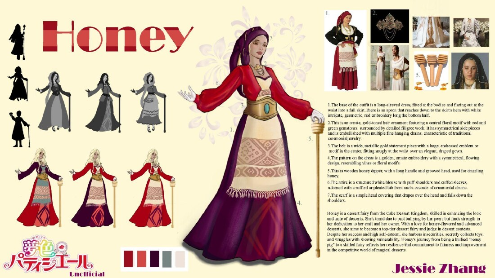
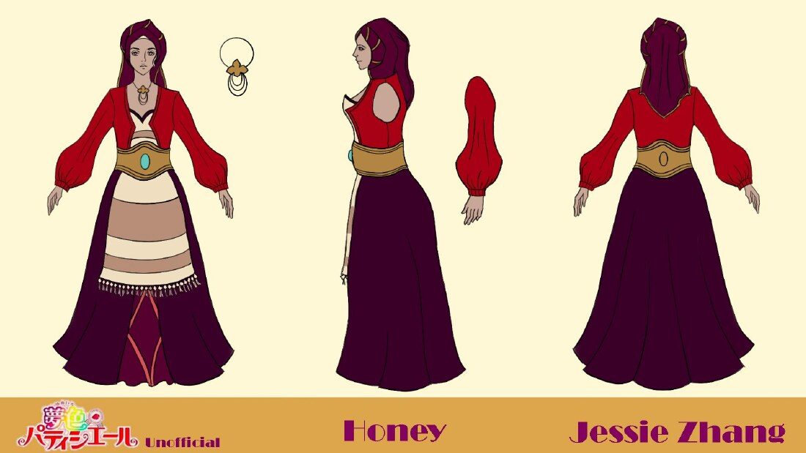
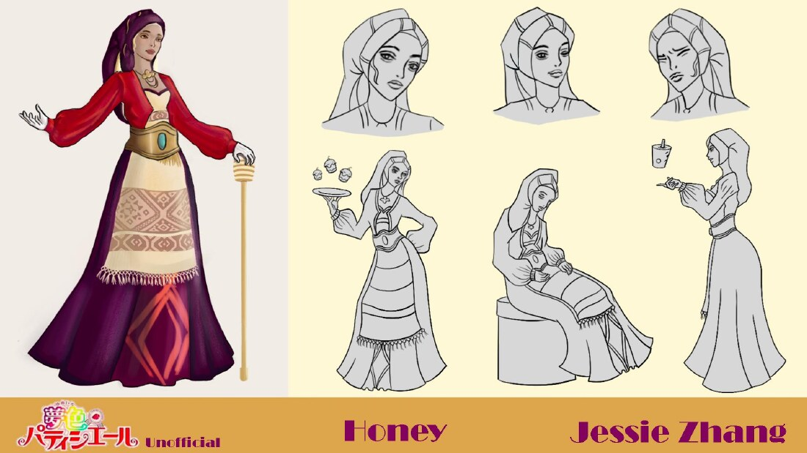
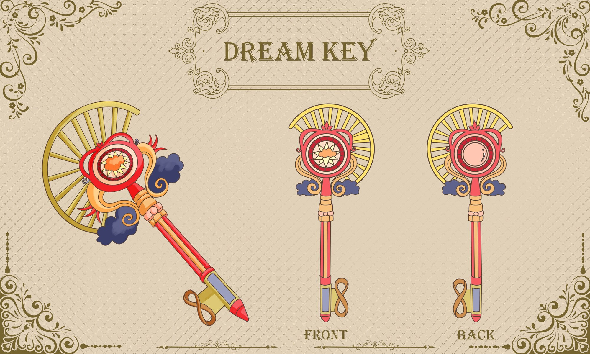
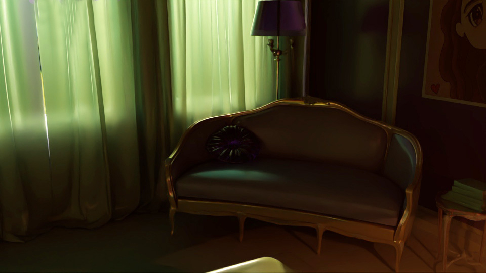
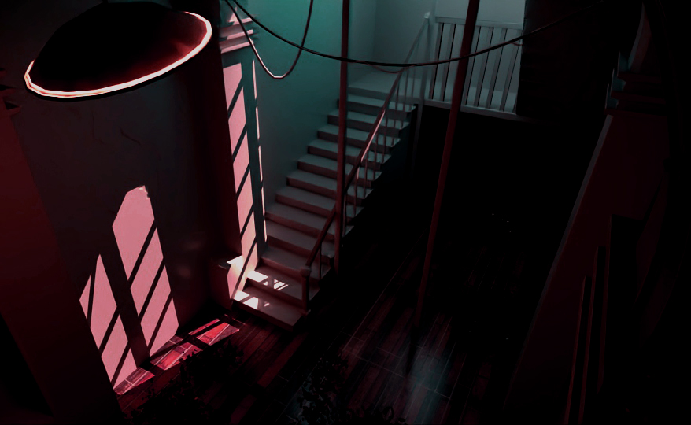
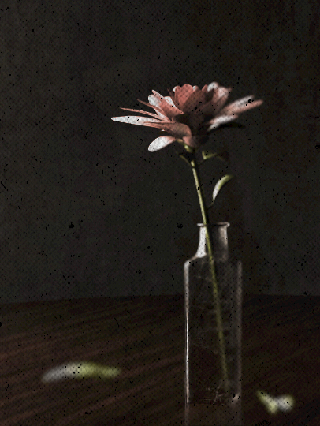
Jessie Zhang is a concept artist and visual development artist with a BFA in Digital Media from Otis College of Art & Design (Presidential Scholar, 2021–2025). Her work spans character, prop, texture and environment design, supported by 3D modeling and VFX. Most recently she painted environment textures for Donuts!, a USC × Otis collaborative game project, and designed a 1980s-streetwear skin series for League of Legends characters as a concept exercise.
Character design · Prop design · Costume design · Texture design · Environment design · Color keys · Illustration · Style guides
Photoshop · Illustrator · Procreate · Maya · ZBrush · Substance Painter · Houdini · After Effects